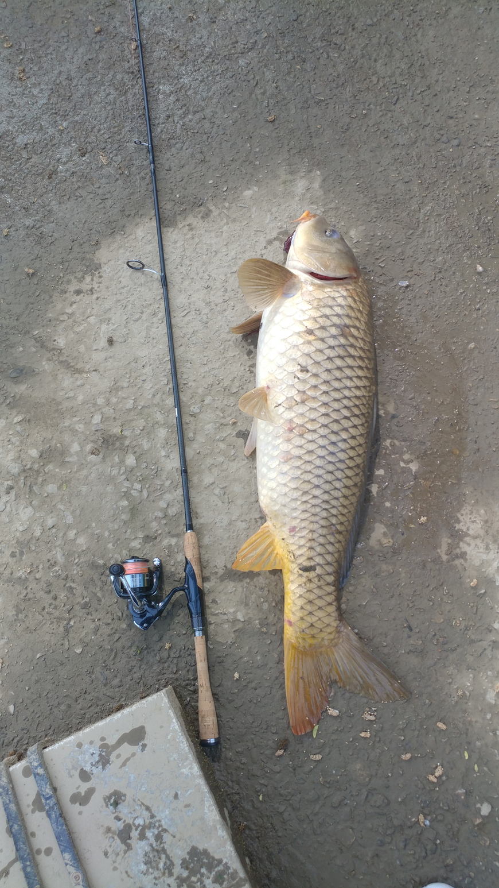

-방구석게임중독 알림-
-정성 추로 공지란으로 옮겼음-
쓰다보니 좀 길어졌네요 ㅎㅎ; 시간 날 때 슬쩍 대충 보십쇼
낚시란 낚싯대 같은 도구를 사용해 물고기를 낚아내는 행위를 뜻합니다.
진짜 실제로 해보면 어려울 게 하나도 없습니다.
그러므로 간단하게 몇 자 적어보겠습니다.
1. 장소에 따른 분류
낚시는 큰 틀에서 보자면 민물 낚시와 바다 낚시가 존재합니다.
이 중에서 가장 쉽게 접할 수 있는 낚시라면 민물 낚시가 되겠죠(개인피셜)
아예 바다 근처에서 사시는 게 아니라면 당장 집 앞 하천에서도 할 수 있는 게 민물 낚시입니다.
물론 바다 근처에 사신다면 말이 다르겠지만요.
2. 도구에 따른 분류
민물 낚시와 바다 낚시가 서로 갈라졌지만 도구는 비슷합니다.
바다에서 쓰는 걸 민물에서 쓰기도 하고 민물에서 쓰는 걸 바다에서 쓰기도 하거든요.
2-1. 찌 낚시
항상 낚시 안하는 사람들에게 낚시란 무엇일 것 같냐고 물어보면
대부분은 "낚시는 기다리는 거 아냐?" 라고 얘기들 합니다.
물론 낚시마다 다들 다르긴 하지만 소위 말하는 기다리는 낚시가 찌를 이용한 낚시입니다.
바다에서는 "민장대"를 사용해 이런 식으로 미끼, 줄, 추, 찌를 이용해 던져 놓은 뒤
찌의 움직임을 이용해 낚아내는 낚시를 합니다.
물론 민장대만을 사용한 낚시가 있는 게 아니라 릴이 달린 낚싯대를 사용한 낚시도 합니다.
방식은 동일하나 줄은 더 멀리 캐스팅이 되고, 힘이 덜 든다는 장점이 있습니다.
민물에서는 바다와 비슷하게 찌의 움직임을 이용한 낚시를 합니다.
둘의 차이점이 있냐? 물으신다면 밑밥의 차이입니다.
바다에서는 밑밥을 뿌려주는 반면, 민물에서는 밑밥을 굳이 던져주지는 않습니다.
2-2. 원투 낚시
원투 낚시란 무거운 추를 달아 멀리 던져 낚아내는 낚시입니다.
물론 원투 낚시도 기다리는 낚시에 속합니다.
일반 찌낚시와 비슷하나 멀리 던지니 찌로 분간하기는 힘드니 낚싯대의 끝에 방울이나 전자 캐미를 달아 놓습니다.
물고기가 미끼를 물고 움직이면 낚싯대가 흔들릴테니 그때 후킹(챔질)을 해서 끌어내면 되는거죠.
계속 바라 볼 필요가 없으니 상당히 편한 낚시입니다.
적당한 곳에 던져 놓고 놀다가 소리 나면 잡아내면 되니까요.
2-3. 루어 낚시
루어 낚시란 인조 미끼로 물고기들을 속여 낚아내는 낚시입니다.
말랑말랑한 고무 재질의 "웜"을 사용한다든가,
딱딱한 플라스틱 or 알루미늄 등을 이용한 "미노우"를 사용하는 낚시라고 보면 됩니다.
제 주력이기도 하고, 입문도 편해서 자세한 건 밑에 서술하겠습니다.
2-4. 플라이 낚시
플라이는 또 뭔데? 싶을 수도 있지만 루어 낚시의 일종이라고 보시면 편합니다.
바다에서는 하지 않고, 계곡 상류 부근에서 수서곤충을 형상화 한 미끼를 이용해 낚아내는 낚시입니다.
이 미끼들은 엄청 가벼워서 물에 잘 뜹니다.
낚싯대가 상당히 특이하게 생겼는데, 플라이 낚시는 미끼나 추의 무게를 이용해 캐스팅 하는 게 아닌,
낚싯줄의 무게를 이용해서 던지는 낚시입니다.
던지고 나서 물 위에 뜬 미끼를 흘려보내면서 낚시를 합니다.
3. 그래서 어떤 낚시를 시작해보면 좋을까?
사실 뭐 이렇게 물어보신다면 답은 정해져 있습니다.
루어 낚시 하세요.
입문하기도 쉽고 잡기도 쉽습니다.
일단 무엇보다 접근성, 범용성이 너어어어무 좋습니다.
본인이 낚시대를 구매했다고 가정해 봅시다.
그렇다면 이제 낚시를 가야 하겠죠. 어디로 갈 수 있을까요?
민물용으로 사셨다면 민물만 가야 합니다.
보통 바다 → 민물은 어떻게든 가능하기는 한데 민물 → 바다는 아예 불가능합니다.
물고기들 힘 자체가 다르거든요. 대부분 낚시대가 구조적으로 다르기도 합니다.
하지만? 루어 낚시는 바다의 대형어종(방어, 참치 등)을 잡는 게 아니라면
바다/민물 다 사용 가능합니다.
물론 청소는 잘 해주셔야 합니다.
그리고 무엇보다 좋은 점은 미끼가 실제 지렁이나 떡밥 등이 아닌 인조. 즉 가짜라는 말인데
잃어버리거나 잘리지 않는다면 반영구적으로 사용가능합니다.
실제로 내구성도 튼튼하구요.
이런 조그마한 물고기부터

이렇게 큰 물고기까지. (실제로 둘 다 같은 낚시대로 잡음)
적당히 조절만 잘 해주신다면 다 잡을 수 있는 게 루어 낚시의 장점입니다.
4. 제일 중요한 가격은?
물론 낚시대도 라인 별로 가격차가 천차만별입니다.
릴 하나에 100만원이 넘을 수도 있으니까요.
하지만 입문이 중요하죠?
진짜 난 "찍먹"만 해볼래!
그렇다면 5만원 언저리에도 릴/낚시대/낚시줄까지 구매 가능합니다.
싼 장비는 많으니까요.
보통 4인치 웜 한봉지가 4,000 ~ 5,000원이니
대략 6만원이면 풀세트 구매 가능합니다.
그 러 나
싸게만 구하려는 건 추천드리지 않습니다.
품질이 최소한이라도 보장되는 제품을 써야 잡았을 때 고장도 덜하고 잘 잡아낼 수 있습니다.
아까 6만원이면 풀세트 구매 가능하다고 썼었죠?
거의 3배로 올라갑니다. 하하
16만원이면 릴, 낚시대, 낚시줄, 미끼, 바늘 전부 다 평균 ~ 평균 이상 수준으로 구매 가능합니다.
그렇지만 처음 해보는건데 그만큼 돈 쓰긴 조금 그렇잖아요?
중고로 구매합시다. 거의 반값까지는 떨어집니다.
운전 초보들도 중고차 뽑잖아요. 같은 맥락입니다.
어느 브랜드의 어느 제품을 써라 하는건 광고같아서 적지는 않겠습니다.
근데 루어낚시 처음인데 어떤거 사야할까요? 하고 검색해보면 거의 다 똑같은 대답만 적혀 있을겁니다.
그거 사시면 됩니다.
5. 그럼 어디서 낚시해?
루어 낚시는 전국 어디를 가든 다 할 수 있습니다.
배스가 잘 없는 강원도면 춘천에서 브라운 송어를 노린다든가, 양식장 근처에서 무지개 송어를 노릴 수도 있구요.
아니면 풍경 좋은 조그만 하천에서 꺽지나 쏘가리를 노려볼 수도 있죠.
나머지 다른 지역은 어느 강을 가시든 배스 있습니다. 가셔서 배스 잡으시면 됩니다.
물론 민물만 가능한 게 아닌 항구, 방파제 근처에서 볼락, 쏨뱅이, 무늬오징어 등을 노려볼 수도 있습니다.
미끼 모양만 바꾸면 뭐든 가능한게 루어 낚시니까요!
?. 번외

겨울에만 즐길 수 있는 얼음 낚시도 있습니다.
물론 지금은 시즌이 다 끝나서 불가능하지만
나중에 행사장이 연다면 꼭 한번 가보는 거 추천드립니다.
잘 잡히기도 하고 송어 맛있습니다. ㄹㅇ루
적기 전에는 쓸 말이 엄청 많았는데 막상 적기 시작하니 쓸 말이 없네요.
감사합니다. 히히
뭐든 질문 받습니다.
후원댓글 25개
댓글 25개 ▼